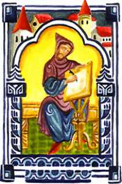

Wednesday, September the 22nd, 2004
back to: title, date or indexes
A disconcerting number of readers write to ask the origin of the brief Bulgarian folk tales assembled here featuring Ugo, his blind ma, and his pal Ulf (look under “Ugo” in the Unhelpful Index for dates). Being folk tales, their origin is of course uncertain, but by scrabbling around distractedly in the cobweb-strewn cellars of the Plovdiv Municipal Archives, our reporter has discovered evidence of the historical figure known only as the Ugo-scribe. Here he is:

In the same bundle of papers tied up with what appears to be the braided fur of an Arctic hare (Lepus timidus arcticus) is a document listing the various maladies suffered by the Ugo-scribe during his long and productive life. They include anstity, black canker, cardiagra, corn rage, eel thing, leake fever, nox, painter's colic, phlegraphy, rising of the lights, salt rheum, simtity, splints, Syrian fever, white liver and worm fits.
Further details of these and other absolutely terrifying ailments can be found at the splendid Archaic Medical Terms website, which is heartily recommended for readers with strong stomachs.